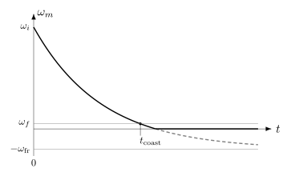

5.3. 停止¶
5.3.1. 概述¶
“停止”是在正常运行之后使电机完全停止的过程，目的是使电机断电并静止于 STOPPED 状态。
MCAF 包含 几种不同的停止选项 可在 motorBench 的 Customize（自定义）页面中选择® Development Suite（开发套件）：
最小影响 PWM（“开环”停止或“自由停转”）
闭环电流
闭环速度
在每种方法中，在 STOPPING 状态 中的运行持续直到以下条件之一成立：
某些原因导致电机退出正常运行（例如：发生故障，或操作员使用实时诊断工具进入测试模式）
电机被要求再次运行
停止完成标志被设置 — 此条件对于不同的停止方法有不同的判定方式。
5.3.2. 最小影响 PWM¶
在最小影响 PWM — 也称“开环”停止或“自由停转” — 中，PWM 输出被改变为 最小影响状态。这本质上是三相桥的开路状态；对于自举栅驱动，低侧开关管以低占空比维持，以保持自举电容器的电荷。
电流测量可能丢失，无传感器估计器可能无法提供有效的换相角度和电机速度估计。
停止完成： 由于速度估计可能不可用，开环停止等待固定的自由停转时间间隔 \(t_{\rm coast}\)，假设初始速度为最坏情况下的最大值（以防角度估计器错误或系统从复位中恢复）。在自由停转间隔结束时，停止完成标志被设置，此时电机速度很可能低于 自由停转速度阈值。
在这些条件下，作用于电机的唯一转矩假定来自黏性阻尼 \(B\) 和摩擦 \(T_{\mathrm{fr}}\) 作用于转子惯性 \(J\) ，使电机自由停转至静止，如 图 5.54 所示，并在公式 5.22：

图 5.54 自由停转曲线，展示从初始速度 \(\omega_i\) 到达到阈值速度的时间 \(\omega_f\)¶
可以分析求解机械速度：
其中 \(\omega_i\) 为初始速度， \(\omega_{\mathrm{fr}}=T_{\mathrm{fr}}/B\)，以及时间常数 \(\tau = J/B\)。
自由停转时间 \(t_{\mathrm{coast}}\) 由公式 5.23 估计，以确定电机速度 \(\omega_m\) 低于自由停转速度阈值的时间 \(\omega_f\)。
注意：最小影响 PWM 不应 不应 在以下任何条件下使用：
电机具有高惯性（至少需要几秒钟才能自由停转）且电机参数不确定
电机受到来自环境的再生转矩作用，可维持电机速度（例如：电动自行车、发电机、处于风车工况的风扇等）
5.3.3. 闭环方法¶
在闭环停止下，磁场定向电流控制得以维持，PWM 输出继续正常的开关模式运行。这使无传感器估计器能继续运行，从而速度估计仍然可用。
停止完成： 当电机速度在最小时间间隔内持续低于速度阈值时，停止完成标志被设置。
注意：闭环停止方法仅应与能够在停止阈值以下维持速度估计的估计器一起使用。（ZS/MT 和 QEI 是合适的例子。AN1292 PLL 可能能够维持速度估计，但应仔细检查闭环停止的使用。已知 ATPLL 在极低速运行时存在稳定性问题。）
5.3.3.1. 闭环电流¶
在闭环电流停止下，电机电流被指令为零。这允许电机以与最小影响 PWM 情况类似的动态自由停转至静止。
5.3.3.2. 闭环速度¶
在闭环速度停止下，外环被指令为零速度。这将使电机非常快地停止，但也会将能量再生回到直流母线上。
注意：闭环速度控制仅在有可靠的再生能量流动路径时才应使用 — 例如，并联电压调节器或连接到直流母线的电池。
5.3.4. 实现说明¶
闭环方法的支持在 MCAF R7 中添加。